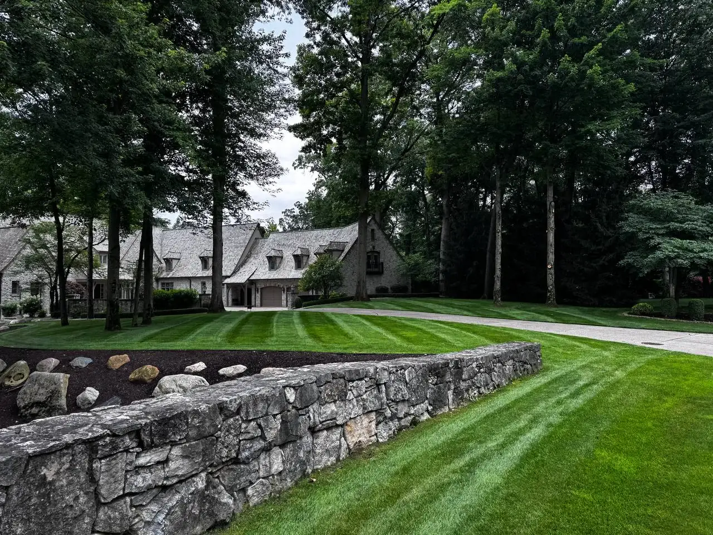

Home / Quote
Fast project quote
Tell Terramorph what you want built, fixed, or transformed.
Use the form for lawn care, landscape maintenance, seasonal cleanup, pruning, mulch, plant installation, patios, retaining walls, drainage, lighting, concrete, power washing, hauling, snow removal, or other property work.
Start with a fast quote
Request My Terramorph Quote
Use the secure Terramorph Jobber request form below. New requests go directly into the CRM so the team can follow up with the right service, city, photos, and timeline.
If the embedded form does not load, open the secure request form directly.
Open Jobber Quote FormCall 419-637-4030What happens next
Simple free estimates for projects and maintenance.
★★★★★“Amazing service every time and prompt to all appointments.”
— CJ Miller
★★★★★“Great work at a fair price. They did what they said they were going to do, when they said they would do it. Fast, friendly. Will definitely use them again.”
— Richard Hansen
★★★★★“Ty and his team put hydro mulch down in my front yard and they did an excellent job. The grass is looking awesome! Thanks guys.”
— Derrick Fawley
★★★★★“I am so impressed with Ty and Terramorph. I called on a Monday and they did the landscaping on Friday. It looks fantastic. A great group of hard working young men. Would recommend to everyone.”
— Barb Flowers
★★★★★“Fast and reliable. Ty did excellent work and very reasonable cost. I would not hesitate to suggest him to others. Thanks Ty!”
— Larry Calcamuggio
★★★★★“Wonderful experience with the young men that worked on my waterfall. They did a good job.”
— Karen Chiaverini
★★★★★“The crew came and did an amazing job!”
— Elliott Hudson